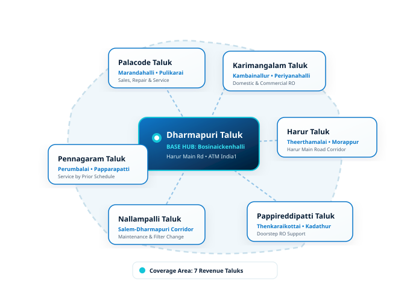

RO Water Purifier Sales & Service Across Dharmapuri District
Structured Service Coverage Across 7 Revenue Taluks from Our Bosinaickenhalli Base
District-Wide RO Purification Coverage
VARUN AQUA TECH provides RO water purifier sales, installation, repair, maintenance and replacement support from its base near Dharmapuri in Bosinaickenhalli. Service availability depends on location, requirement and scheduling.
Covering an area of approximately 4,497 sq. km bordered by Krishnagiri, Salem, Tiruvannamalai, Villupuram, and Karnataka, Dharmapuri District features diverse water conditions. We organize our service logistics around the 7 official revenue taluks to ensure realistic, honest, and reliable doorstep response.

RO Service Areas in Dharmapuri District
Select your revenue taluk below to view localized service coverage, common water conditions, and contact details.
Dharmapuri Taluk
Dharmapuri Town, Bosinaickenhalli, Harur Main Road, Hale Dharmapuri, and urban wards.
Explore Taluk →Harur Taluk
Harur Town, Theerthamalai, Morappur along the direct Harur Main Road transit axis.
Explore Taluk →Palacode Taluk
Palacode, Marandahalli, Pulikarai, and agricultural/residential clusters.
Explore Taluk →Karimangalam Taluk
Karimangalam, Kambainallur, Periyanahalli, and surrounding village areas.
Explore Taluk →Pennagaram Taluk
Pennagaram, Perumbalai, Papparapatti, and nearby river basin settlements.
Explore Taluk →Nallampalli Taluk
Nallampalli, Thoppur, and Salem-Dharmapuri highway corridor communities.
Explore Taluk →Pappireddipatti Taluk
Pappireddipatti, Thenkaraikottai, Kadathur, and rural panchayat areas.
Explore Taluk →District Service Availability Matrix
In accordance with our honest service policy, we outline actual service availability rather than claiming automatic instant response in every village:
| Taluk / Area | Operational Hub | Service Availability | Primary Services Offered |
|---|---|---|---|
| Dharmapuri Taluk | Bosinaickenhalli (Base) | ✓ Direct Doorstep | Sales, Installation, Repair, Maintenance, Filter Change, AMC |
| Harur Taluk | Harur Corridor | Confirm with business | Domestic & Commercial RO, Repairs, Filter Replacement |
| Palacode Taluk | Palacode Cluster | Confirm with business | Sales, Installation, Repair, Maintenance |
| Karimangalam Taluk | Karimangalam Cluster | Confirm with business | RO Services, Filter Spares, Installation |
| Pennagaram Taluk | Pennagaram Cluster | Confirm with business | RO Purifier Servicing, Membrane Replacement |
| Nallampalli Taluk | Nallampalli Cluster | Confirm with business | RO Repair, Maintenance, Domestic RO |
| Pappireddipatti Taluk | Pappireddipatti Cluster | Confirm with business | RO Services, AMC, Filter Replacement |
* Note: Timelines and travel logistics depend on technician schedule and exact destination. Contact our team to confirm.
Schedule RO Service or Consultation
Contact VARUN AQUA TECH for prompt RO sales, installation, repair, maintenance or replacement services in Dharmapuri and surrounding areas.
Sales & Service Center:
India1 ATM, Harur Main Road, near Dharmapuri, Bosinaickenhalli, Tamil Nadu - 635303, India
Direct Phone: +91 88380 55968
Hours: Open 24 Hours - Monday to Sunday
Service availability is confirmed directly with our team based on your exact location and requirement.